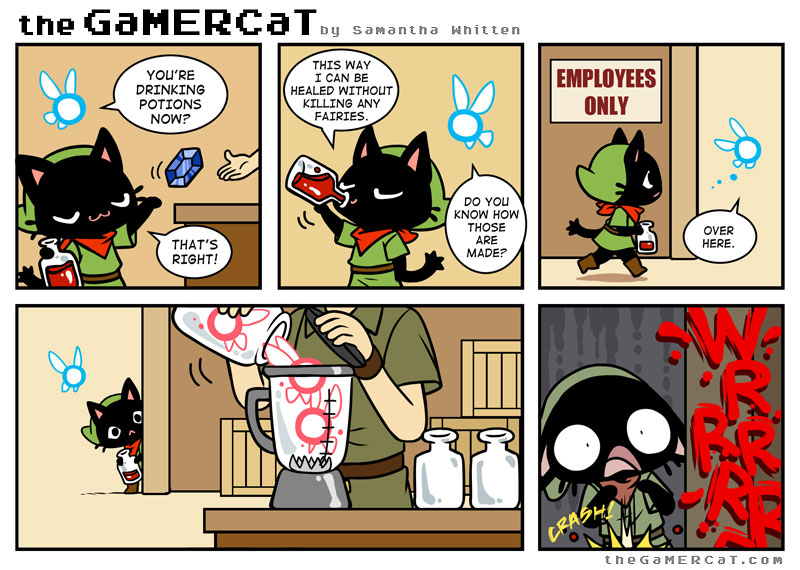
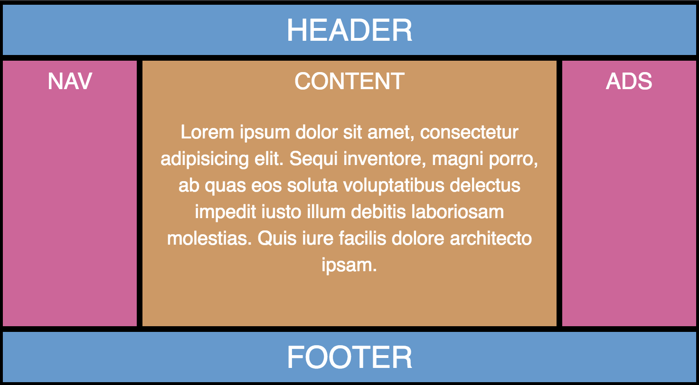

Stop using Bootstrap PLZ!
November 25th 2016
Who am I?
Davide Di Pumpo
- Creative Technologist
- Digital Architect at Objectway
- Co-organizer Milano Frontend
- MakhBeth on: Twitter, Github, Internet
- I like Cats, Drink, Comics and Videogames...
Let's start Meaow!
Survey Time!!!
Do you like sushi?
Some of you, will hate me!
Why do I do that?
Do you remember the sushi slide from earlier?
Old Wide Web
Or not so old?
It was only 5 years ago
Twitter blueprint and so on
Does Twitter use Twitter Bootstrap?
Me and the Bootstrap
Love!


FLEXBOX
Why not only be friends?
And I started to question myself
Javascript
Beautiful enhancement? What?
Everyone uses JavaScript today!
less ~1%
Angular, React, Vue?
CSS
Heavy?
We start with 142.6KB or 20.8KB gzipped
Useless classes
.col-xs-1?
What about Uncss?
Based on float...
What about vertical alignment? Holy Grail layout?
Even display: table; is better
Ok, there is an alpha with flexbox option...
But it doesn't have fallbacks...
And CSS Grid is getting close...
Media queries
4 breakpoints, based on DEVICE?
Specificity
.panel > .table-responsive:first-child > .table:first-child > tbody:first-child > tr:first-child th:last-child {
border-top-right-radius: 3px;
}
HTML
Do you have a problem with that?
<div class="col-sm-6 col-md-5
col-md-offset-2 col-lg-6 col-lg-offset-0">
Separation of concerns
W3CYeah, but... what about real life?
You can have:
- Difficulties to reuse code
- Difficulties to temify
- Meaningless classes
- Specifity nightmares
!important
Preprocessor
Using Bootstrap via a preprocessor is a lot better
.author-nameLast {
@extend .col-md-4;
}
.author-nameLast {
@include make-md-column(4);
}
But...
@extend
Extending is invisible. Extending doesn’t necessarily help file weight, contrary to the saying. Extending doesn’t work across media queries. Extending is not flexible. Mixins have absolutely no drawback. Hugo Giraudel@mixins
.author-nameLast {
@include make-xs-column(12);
@include make-sm-column(6);
@include make-md-column(4);
@include make-lg-column(3);
}
// Pagination
@mixin pagination-size($padding-vertical, $padding-horizontal, $font-size, $line-height, $border-radius) {
> li {
> a,
> span {
padding: $padding-vertical $padding-horizontal;
font-size: $font-size;
line-height: $line-height;
}
&:first-child {
> a,
> span {
@include border-left-radius($border-radius);
}
}
&:last-child {
> a,
> span {
@include border-right-radius($border-radius);
}
}
}
}

Design
Websites
- Large scale e-commerce and news websites
- Apps with reusable components to be used in different spots
- Lots of page types and may need redesign
- Promo sites and landing pages
Large e-commerce
The conversion rate is related to the design of a product page
With bootstrap it is difficult to delivery two different version of a page, or test if a change breaks something in minor sub pages.
Build an app with components
It's important to reuse atomic designed component
With bootstrap it is difficult to put content in tag based components. Try to put a
ul based dropdown inside Bootstrap's navigation
News websites
You may need to redesign subpages
You have changed the font size of
h1 and h2.
And now you need to check more than a hundred pages to ensure nothing has gone wrong,
and everything is ok!
Landing page / Promo websites
Simple heading, ctas, hero panels and forms
=======Landing pages
Simple heading, CTAs, hero panels and forms
>>>>>>> 146e9ac08a6eec105d37d07341657c710641bfc0Instead of speeding up your work, you will be losing time in a fight with a number of Bootstrap side effects.
Burger button can HALVE conversion rate! Source
What about carousels?
Yeah, but I can change every single aspect of Bootstrap!
Accessibility
Remind me why I use Bootstrap
or how to avoid false myths.It's fast
Says who?
Let's say it's fast for developers
Technical debt
"a concept in programming that reflects the extra development work that arises when code that is easy to implement in the short run is used instead of applying the best overall solution"
It's a sort of standard
Seriously?
It's a good starting point for interns
Oh, come on...
Maybe you want them to learn an OOCSS anti pattern?
Alternatives
GO Modular!
BEM
ITCSS
Susy
Neat
SuperGiGi
Buttons
Typography
Refills
Github is a wonderful place

It's dangerous to go alone

Recap
- Javascript Oh god no
- CSS Nope
- HTML Nope
- Preprocessor If you have
- Design Questionable
- Accessibility With plugin
TLDR
- Prototypes, internal tools/admin, uncle's website YES!
- Production website NOPE!
A last reason to avoid Bootstrap?
C'ha rotto er *****
@dbertellaInsights and Bibliography
=======Insights and bibliography
>>>>>>> 146e9ac08a6eec105d37d07341657c710641bfc0- Article: You don't need bootstrap
- Bootstrap Bankruptcy
- Stop embedding bootstrap classes
- Bootstrap an intervantion
- OOCSS is an anti-pattern
- Why we don't use Bootstrap
- Bootstrap you're doing it wrong
- Why don’t you use Bootstrap?
- The hamburger menu doesn't work
- Should I use a carousel?
- Bootstrap accessibility issue